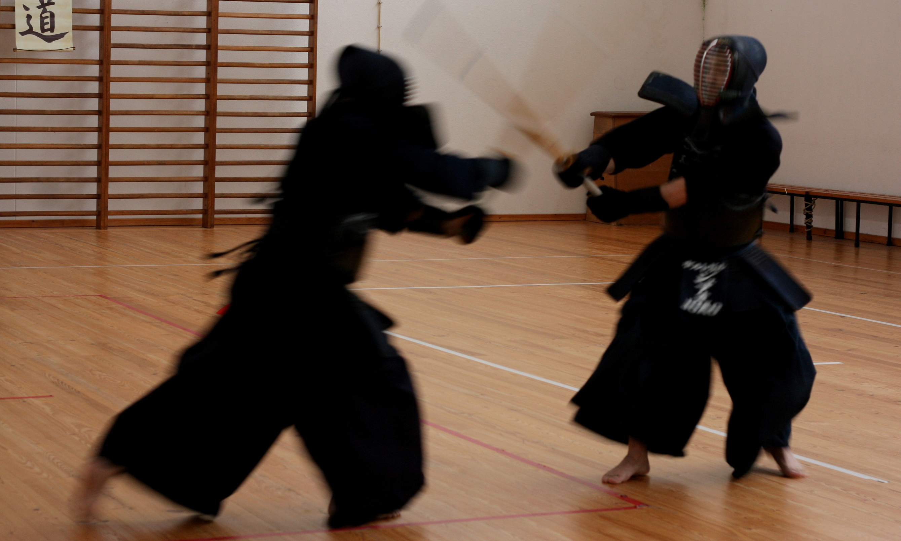

Asakazekan 朝風館
JODO – IAIDO – KENDO


História
Em 2010 um grupo de praticantes de Jodo e Iaido, motivados pela perspetiva de trazer estas modalidades para o distrito de Aveiro, obtiveram autorização para constituir um clube.
Foi assim que em 2011 nasceu o Clube de Jodo e Iaido do Vouga, o primeiro Dojo na zona centro de Portugal exclusivamente dedicado à prática de Jodo e Iaido.
Prosseguindo a visão dos fundadores, o Clube de Jodo e Iaido do Vouga iniciou as suas atividades pedagógicas organizando aulas, treinos, demonstrações públicas, competições desportivas, bem como estágios regionais e nacionais, destinados a divulgar e promover a prática do Jodo e do Iaido.
Em 2012, respondendo positivamente à vontade de um grupo de interessados em praticar Kendo, o Clube apoiou a constituição do grupo de praticantes de Kendo de Aveiro, que se juntou para praticar e promover o Kendo, a disciplina mais representativa das modalidades integradas no arco federativo liderado pela Associação Portuguesa de Kendo.

Em 2014 o Clube de Jodo e Iaido do Vouga iniciou um novo ciclo e iniciou o estudo da escola tradicional Sui Ō Ryu Iai Kenpo, passando adotar uma identidade mais tradicional, pela adoção do um nome japonês, Asakazekan, sugerido pelo Sensei Robert Rodríguez. Os kanji serão 朝風館.
O termo Asakaze remete para o conceito do vento matinal, o qual sopra da terra para o mar no litoral, e do cume das montanhas para o vale nas zonas montanhosas. Significado plenamente de acordo com a imagem de fluidez e ligação aos elementos água e vento que tão bem caraterizam a região onde estamos situados. Somos pois o Dojo (Kan) do vento matinal (Asakaze).

Ainda em 2014, e por vontade dos professores e fundadores dos dois grupos, o Clube de Kendo de Aveiro foi integrado no renovado Asakazekan – Clube de Jodo e Iaido do Vouga, que passou assim a integrar o arco completo das disciplinas superiormente representadas pela Associação Portuguesa de Kendo, enquanto representante oficial em Portugal da European Kendo Federation.
Desta forma, o Asakazekan – Clube de Jodo e Iaido do Vouga, tornou-se no primeiro Dojo em Portugal a integrar oficialmente as disciplinas de Jodo, Iaido e Kendo.
Contactos
Redes sociais
Email:
- (Jodo e Iaido) iaido.cjiv
 gmail.com
gmail.com - (Kendo) kendo.cjivgmail.com
Telefónico:
- (Jodo/Iaido) 00351 939 901 326
- (Kendo) 00351 917 805 595